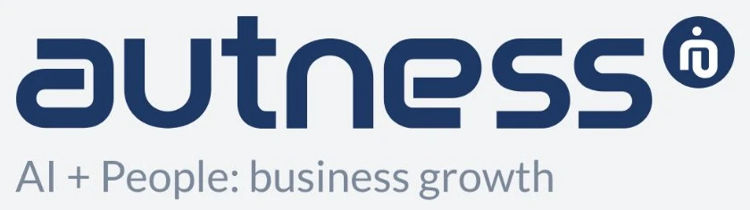
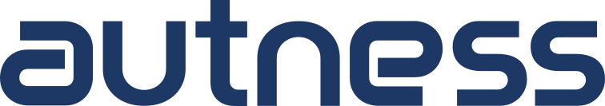
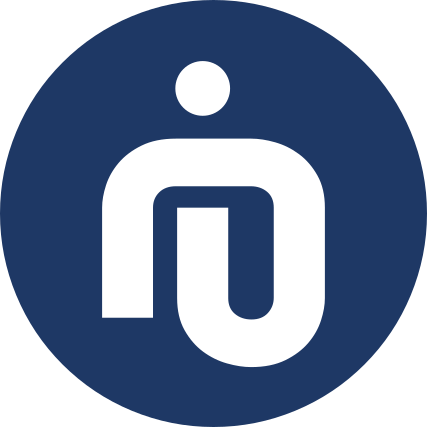
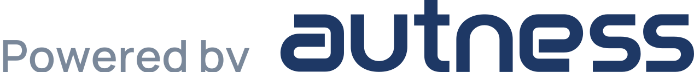
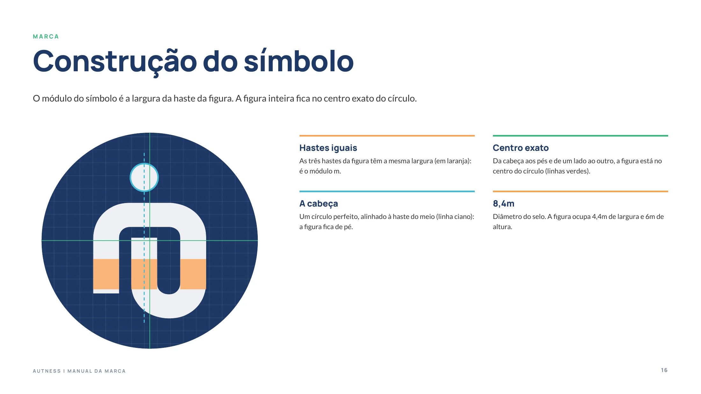
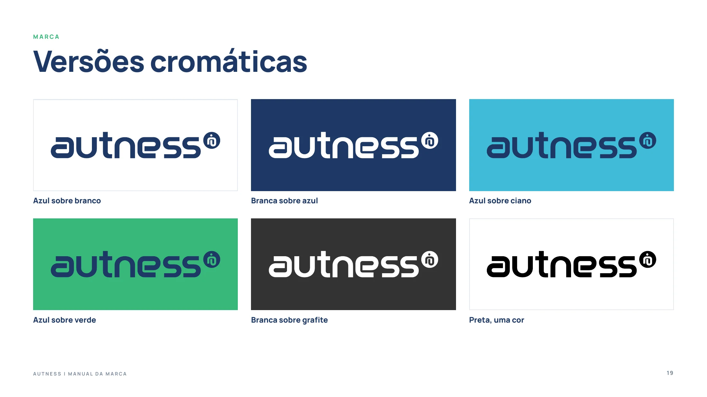
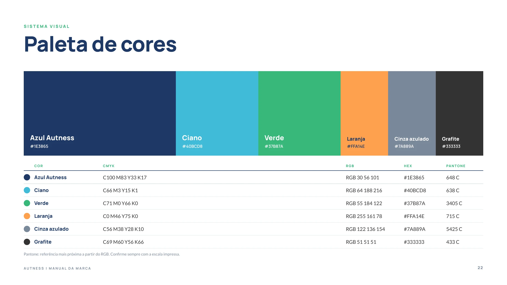
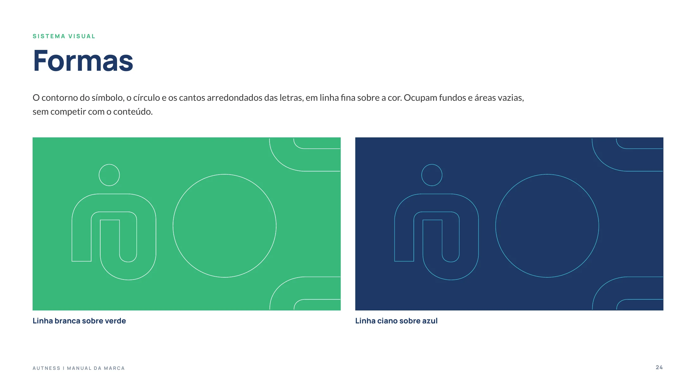
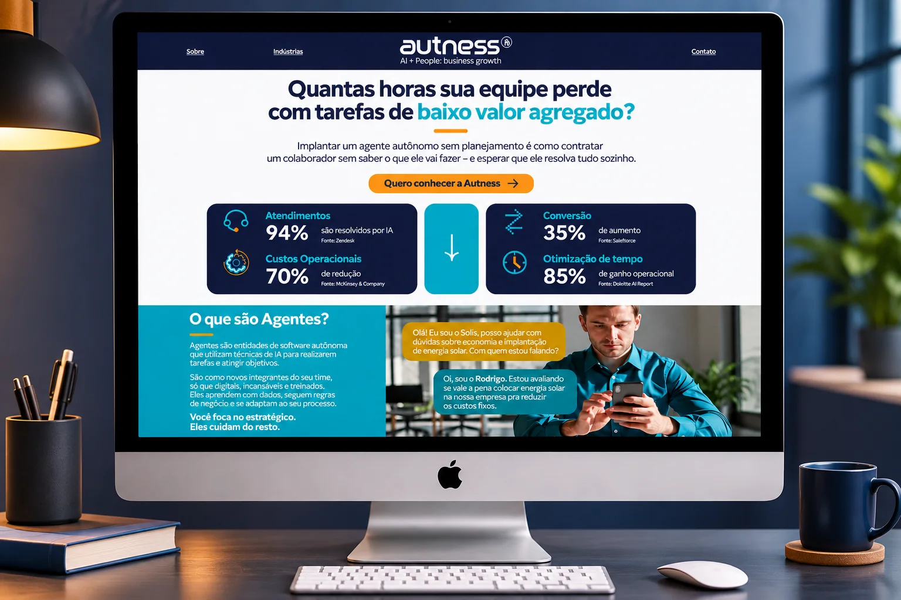
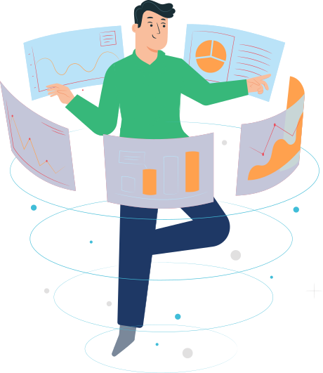

Autness
Criamos o nome da Autness quando ela nasceu para automatizar treinamentos e processos. Quando a IA mudou o mercado, a marca mudou junto: deixou de vender automação e passou a entregar crescimento com IA e pessoas.
Naming
O nome veio primeiro. O processo de naming gerou cerca de trinta nomes, todos pesquisados, e sete chegaram à apresentação. Os critérios foram alinhamento com a estratégia, originalidade, fácil compreensão, memorização, potencial de design e permanência.
Autness foi o escolhido: a soma de automação com negócios, em inglês business. Um nome de categoria global, com fonética excelente e que posiciona com clareza o negócio e o benefício.
Autness: automação que potencializa negócios.
Desafio
Com a IA, a pergunta das empresas passou a ser outra: como crescer com agentes inteligentes sem deixar as pessoas de lado. A Autness virou uma consultoria de IA autônoma, e a marca que nasceu para treinamentos e processos já não contava essa história.
O nome continuava certo. O que precisava mudar era tudo o que ele carregava.

- 01
O mercado mudou com a IA, e a marca precisava mudar junto
A Autness nasceu para automatizar treinamentos e processos. Agora entrega crescimento com agentes inteligentes e pessoas.
- 02
Tirar a máquina da frente
As letras em caixa alta e recortadas pareciam peças de máquina. Caixa baixa e curvas suaves deixam a tecnologia próxima.
- 03
O ponto vira o agente
Os pontos soltos no A, no N e no S se juntam em um só: a cabeça da figura humana no selo.
- 04
Deixar claro o que a Autness entrega
A tagline AI + People: business growth e a paleta própria dão foco ao posicionamento.
Estratégia
A Autness não vende IA: entrega resultado. A plataforma de marca partiu daí e colocou as pessoas no centro, com a IA executando o que é mecânico para que os times pensem, criem e decidam.
AI + People: business growth.
Propósito
- Libertar o potencial humano ao automatizar o que é mecânico, com ética, inteligência e propósito
Posicionamento
- Consultoria especializada em IA autônoma aplicada ao negócio, com agentes hiperpersonalizados para vendas e atendimento
Arquétipo
- Sábio, com traços do Criador
- Autoridade técnica, com soluções sob medida
Personalidade
- Tecnológica, moderna, ágil e próxima
- Transparente, acolhedora e confiável
Tom de voz
- Orientador, direcionador e acessível
- Clareza com visão, autoridade com empatia
Valores
- Ética como base de toda inovação
- Excelência com propósito real
- Humanidade no centro das decisões
Identidade
O logotipo em caixa baixa equilibra o humano e o tecnológico: tecnologia com proximidade, inteligência sem arrogância. O símbolo é uma figura humana dentro do n. A cabeça é o ponto, o corpo é o fluxo: IA com forma humana, a pessoa no centro da tecnologia.
O ponto do símbolo vive em cada ícone e vira selo: assina os agentes de vendas e de atendimento e as entregas “Powered by Autness”.



Selos de agente e assinatura




Páginas do manual da marca


Ilustração e fotografia: pessoas reais e diversas, com a tecnologia como apoio
O que entregamos
Do nome ao novo manual da marca.
Naming
- Cerca de trinta nomes pesquisados
- Sete apresentados com argumento e taglines
Plataforma de marca
- Desafio e diretrizes estratégicas
- Propósito, diferencial e valores
- Personalidade e experiência
Posicionamento
- Posicionamento e tagline
- Arquétipo e tom de voz
- Frases-chave da comunicação
Identidade
- Logotipo, símbolo e malha
- Versões, cores e tipografia
- Ícones, formas e ilustração
Selos de agente
- Agente de vendas e de atendimento
- Assinatura Powered by Autness
Manual da marca
- Estratégia, marca e sistema visual
- Usos corretos e proibidos
- Vídeo de apresentação do case